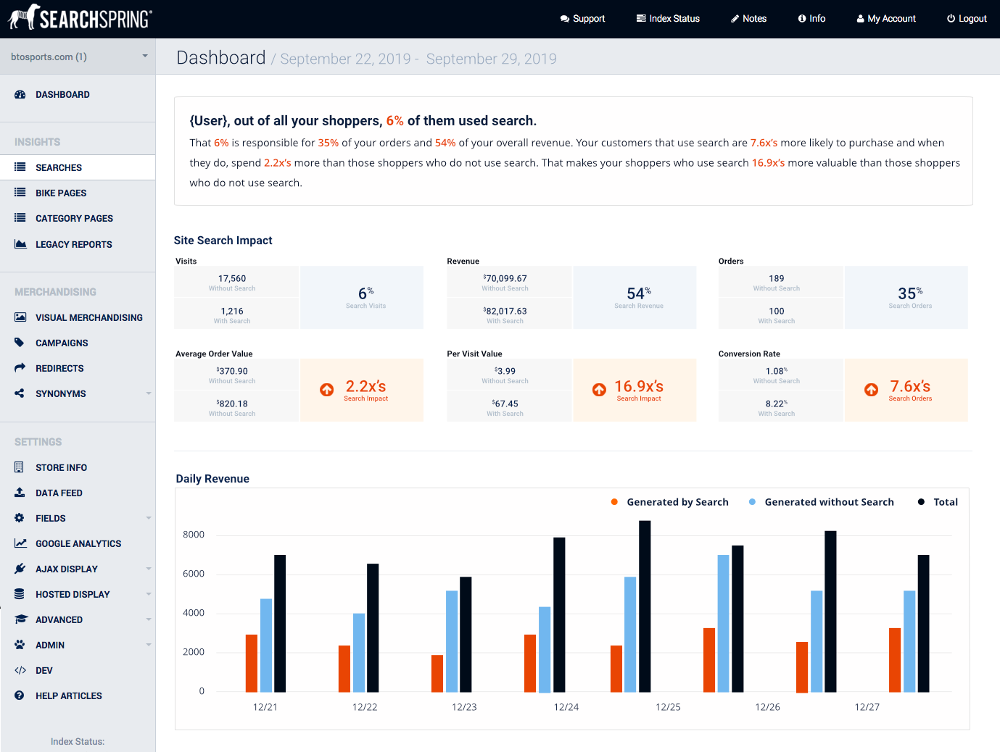
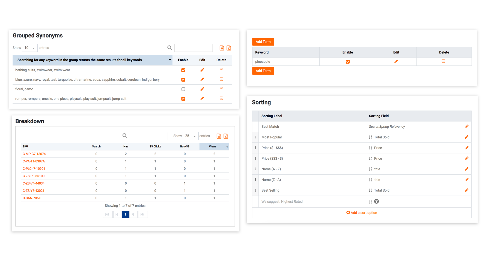
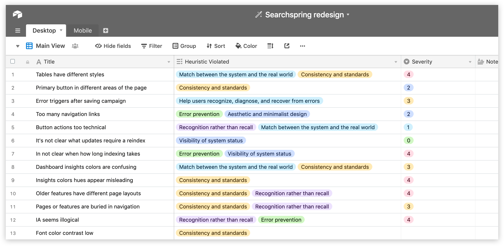
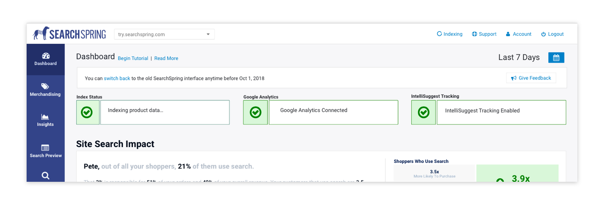
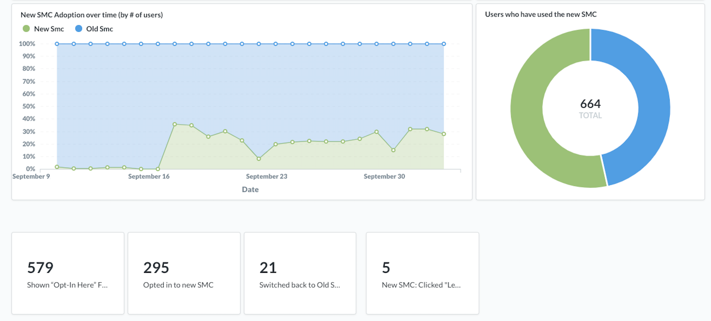

Before I joined SearchSpring, our management console had undergone several redesigns, mostly overseen by developers. It loosely followed design library however, with the addition of new features, old features were left behind and forgotten. The interface was filled with inconsistencies that made it hard to navigate and use. A frankenproduct. The old navigation was an overwhelming list of every action available and did not align with common user goals.
We had become buried in design and tech debt. This was a huge undertaking for our team and our hard work led to a substantially more usable product with a newly implemented a design system that is able to satisfy new and changing features in the future.
Role:
Product Designer
Redesigns are fun on the surface but in reality they are a PAIN. The require disruption from other features in development. They are often met with users who are upset with the changes. Getting stakeholders to agree with certain aspects of the project was demanding. But this is something myself and the rest of the product team had been dying to do for a long time so it was worth all the effort.
I conducted a series of interviews, assisted with research and audits to understand the flaws of the old system. After establishing the user experience needs, I lead efforts to build a visual design system and user interface for the new management console.
Our overarching research goal was to understand how people used the management console, what their primary goals are, and ultimately how effectively the interface guides users to reach those goals. We began by formally evaluating the visual design to gain an understanding of the problem space. Then we moved on to user interviews to understand the process of their merchandising methods and identify major drivers of engagement.
The product team was always aware of the problems with the management console. However, in order to formalize our understanding, my team created a list of all these issues in a visual analysis. What we found was many inconsistent behaviors and confusing actions. Pages along the main navigation behaved differently. Some pages would autosave changes from the user (sometimes with appropriate feedback and sometimes not) while other pages would require the user to hit a save button. The save button or other primary action button would be on the bottom of a page, sometimes on the left on sometimes on the right. Simple components like tables had multiple variants that all behaved slightly different from one another.
Overwhelming navigation
So many table styles
Using Airtable to keep track of all heuristic violations
Design Impact - We concluded from our evaluation numerous visual issues and heuristic violations that greatly impact the usability of the website.
We conducted interviews with our customers to understand the daily goals and frustrations that they faced. In the interview, we first questioned the participants about their past experience with merchandising software and then transitioned into a contextual inquiry where we had them walk us through creating a merchandising campaign. These tasks helped us collect data to answer the following questions
Interview with User of a Competitor Product
We had the rare opportunity to invite someone who uses one of our competitors products to our office and talk about their experience using it. Our interview was very insightful as we learned about her goals, the things she did on a daily basis and how she accomplished them. She was quoted saying, “I’m the only one who can use the merchandising software. No one wants to touch it. I probably wouldn’t want them to anyways”. The other product offered more control but the sheer volume of actions gets very complex. This makes their product difficult to maintain and this frustrates product managers & merchandisers. Overall the tone and language used was very different from our own product. With these insights, our team had a better understanding of how to position messaging to our users.
“I’m the only one who can use the merchandising software. No one wants to touch it. I probably wouldn’t want them to anyways”
Now that we had a solid understanding of the problems our users faced and documentation of our current UI, I started on wireframes and user flows. I focused on exploring different approaches to the navigation and quickly incorporated them into an InVision prototype so that we could get the concept in front of beta customers. What I came up with was the introduction of a sub menu that encapsulate all the related pages under one main menu item.
Wireframes for different approaches to the navigation
Through a series of brainstorming sessions, the team narrowed in on two design approaches to use in testing. During this round of testing, users were shown design A and design B. Each prototype used the same series of tasks, allowing us to track usability issues from each prototype individually. What we found was prototype B was potentially confusing. Clicking on a main menu link opens its corresponding sub-menu without auto-loading the first link in that sub-menu. We found that there was confusion between opening the menu and viewing what page you were already on. We decided to go with prototype A. The drawback with prototype A was that clicking the menu item navigated to the first item in the sub-menu. To get to other pages in the sub menu takes longer because of the initial page load but we decided based on the testing that it was a suitable approach.
Prototype A
Prototype B
What changes happened based on test results
This redesign presented some pretty heavy changes we would be asking our users adopt. Of course to the team, the redesign was a vast improvement but convincing our user, who has invested time into learning the placement of buttons and actions of the old system was another story. A proper release strategy was important ease initial customer apprehension towards the new design. Our release strategy included an announcement email and in-app message notifying users that exciting changes were coming and inviting them to be a part of the beta release. When we went into public beta, we made a welcome notification on the top of the page where users could report bugs and give feedback. Additionally, we included a toggle to switch back-and-forth between the old and new designs. 
All the feedback we received was either bug related or had something generally positive to say about the appearance or experience with the redesign.
Adoption rate was at about 50% before the full switch over. Of the users that decided to try the new design, only 7.1% switched back to the old UI. Email messaging, the FAQ blog post, alpha testing, the ability to switch between old and new UI, and ability to submit real-time feedback were all highly received by our customers and made for a better transition into the new design
